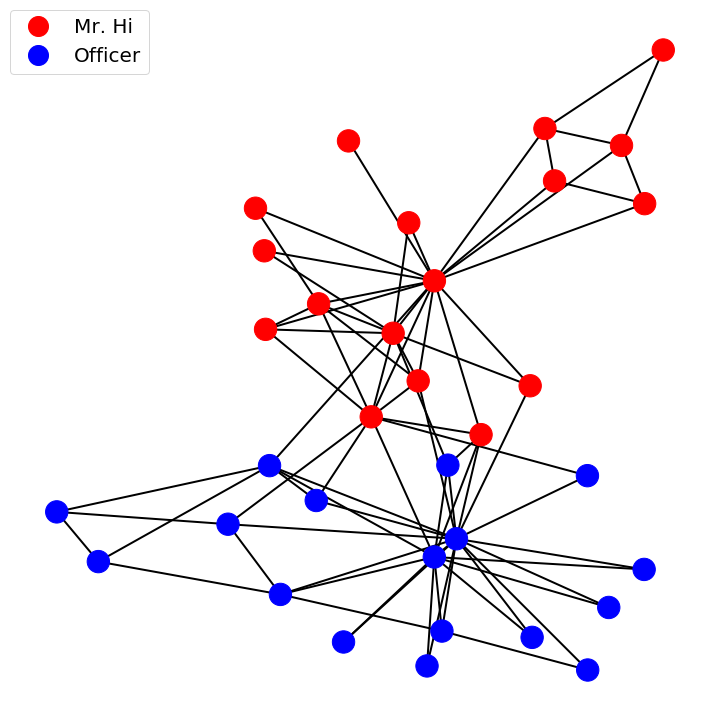
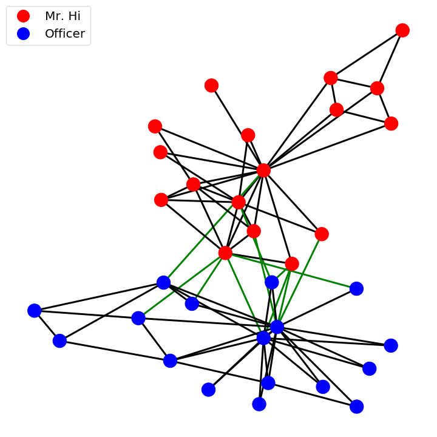
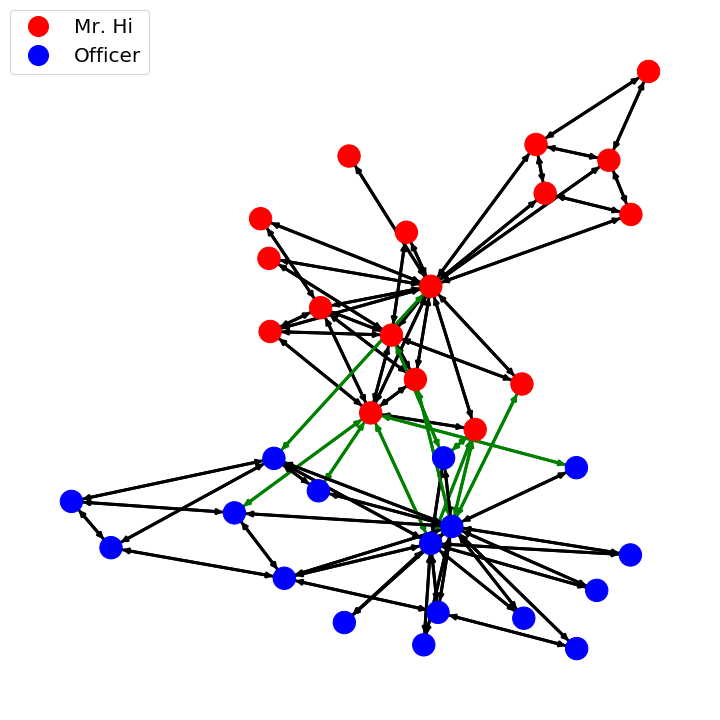
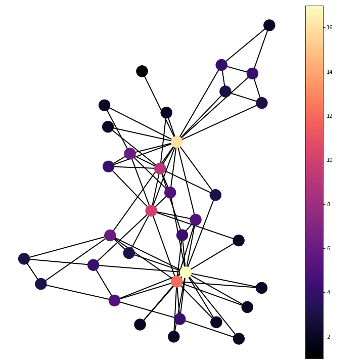
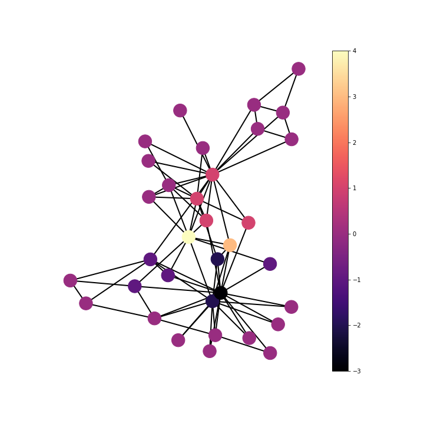

Understanding the Specral Graph Laplacian
Josh Mitton, 2 Feb 2020

Gradients on graphs
The gradient function gives the direction of steepest increase. On a graph this is the direction of steepest increase between nodes. In the case of discrete node labels with two states, as in the karate club, the gradient function gives edges where there is a difference between adjoining node labels.In the case of the karate club colouring the edges by there respective gradient values highlights friendships that existed between two members who went on to join different groups after the group split.
The gradient function maps from graph nodes to graph edges. It can be intuitively interpreted as the difference between the function evaluated at two points or in the case of the graph two nodes, \(X_i\) and \(X_j\)
\(\nabla: \mathcal{F} (\mathcal{V}) \rightarrow \mathcal{F}(\mathcal{\varepsilon}) \)
\(\ (\nabla f)_{ij} = f_i - f_j \)

In addition to the intuitive interpretation, the gradient function on a graph can be defined from an incidence matrix, \(K\), whose transpose maps functions over vertices to edges. The matrix \(K\) is an \( (A,B) \) matrix, with \(A\) and \(B\) the number of nodes and edges respectively. To construct \(K\), for every edge, \(e=(i,j)\), \(K_{i,e} = +1\) and \(K_{j,e} = -1\).
\(\nabla: \mathcal{F} (\mathcal{V}) \rightarrow \mathcal{F}(\mathcal{\varepsilon}) \)
\(\ (\nabla f)_{ij} = K^{T} f \)

Divergences on graphs
The divergence of a function represents the density of an outward flux of the function from an infinitesimal volume around a given point. In the case of a graph the infinitesimal volume becomes the sum over neighbouring nodes of the outward flux of the edge function. On a graph with edges representing a constant function, i.e. friendship in the case of the karate club, the divergence becomes the number of neighbours of the node.
\(\nabla: \mathcal{F} (\mathcal{\varepsilon}) \rightarrow \mathcal{F}(\mathcal{V}) \)
\( \mathrm{div} F_{i} = \dfrac{1}{a_i} \sum_{j:(i,j) \in \varepsilon} w_{ij} F_{ij} \)

It should be noted that the divergence values are double that given by the more intuitive method. This is due to the definition using incidence matrices operating on directed graphs, while the previous definition operates on undirected graphs. This yields twice the number of edges using the incidence definition.
\(\nabla: \mathcal{F} (\mathcal{\varepsilon}) \rightarrow \mathcal{F}(\mathcal{V}) \)
\( \mathrm{div} F_{i} = K f \)
Laplacians on graphs
The Laplacian is the equal to the negative divergence of the gradient function. This is equal to the difference between the gradient function evaluated at a point and the average of the gradient function on a infinitesimal sphere around the point. In the discrete case of a graph the infinitesimal sphere becomes the sum over neighbouring nodes. The Laplacian then becomes the sum of the gradient function scaled by the associated edge weight between the two nodes evaluated over neighbouring nodes.
\(\nabla: \mathcal{F} (\mathcal{V}) \rightarrow \mathcal{F}(\mathcal{V}) \)
\( (\Delta F)_{i} = \dfrac{1}{a_i} \sum_{j:(i,j) \in \varepsilon} w_{ij} (f_i - f_j) \)

\(\nabla: \mathcal{F} (\mathcal{V}) \rightarrow \mathcal{F}(\mathcal{V}) \)
\( (\Delta F)_{i} = \mathrm{div} (\mathrm{grad} (f)) = K K^{T} f \)
\( \Delta = \mathrm{D} - \mathrm{A} \)

The Laplacian operator on the karate club shows the number of friendships each person had with someone who joined the opposite group after the group split. This can be seen from the definition of the Laplacian as the divergence of the gradient function. The gradient function maps from nodes to edges giving value to edges where there is a friendship spanning a difference in end group choice and zero where the friendship pair join the same group. The divergence is then summing for each member/node over adjoining edge functions, the gradient values, to give the Laplacian. This summation over adjoining edge functions is summing the friendships that spanned different groups after the club split. From this it can be seen that nodes with large positive Laplacian value are people who ultimately joined the group of Mr. Hi, but had many friendships with members who joined the group of Officer; on the other hand, nodes with large negative Laplacian were people who ultimately joined the group of Officer, but had many friendships with members who joined the group of Mr. Hi.